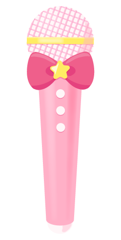
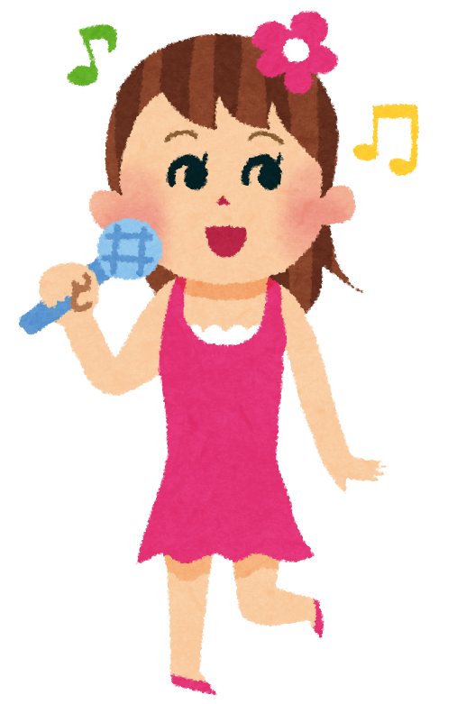
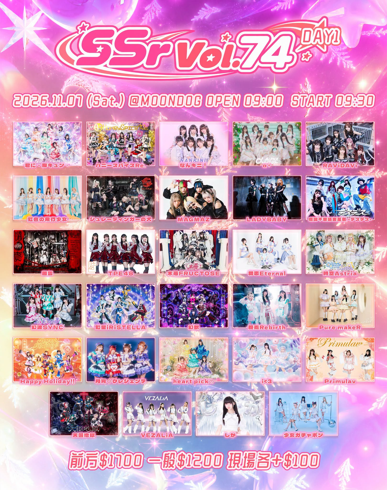

TAIWAN UNDERGROUND IDOL CULTURE
LIVE START
TAIWAN UNDERGROUND IDOL
台湾の地下アイドル文化や現役アイドルの情報、 イベントカレンダー、関連する文化を紹介します。
文化やファンの楽しみ方、ライブでの応援方法など、 台湾の地下アイドルについて一歩ずつ学びましょう。

地下アイドルの特徴や活動スタイル、 文化的な背景を紹介します。
初めて地下アイドルのイベントに参加する方へ。 ファン文化について学びましょう。
現場大家到底在喊什麼？ 從MIX入門 開始認識應援。

ステージに立ちたい方へ。活動の始め方や準備、 契約と自分を守るためのポイントを紹介します。
從不同活動形式與經營方式， 認識現在活躍中的台湾の地下アイドル。
COMPANY
INDEPENDENT
SOLO IDOL
SHOP IDOL
今注目したい地下アイドルのイベントをピックアップ。

📍 台北｜MOONDOG
時間 ✩ OPEN 9:00 / START 09:30